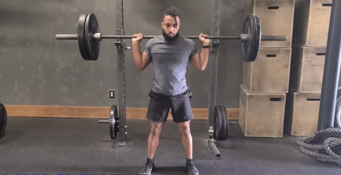
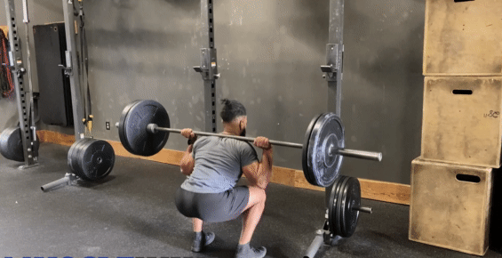
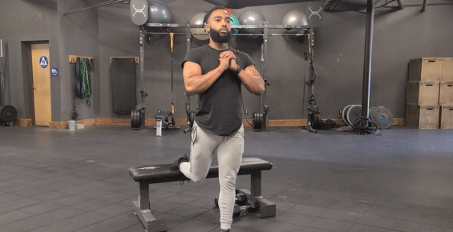
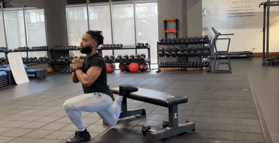
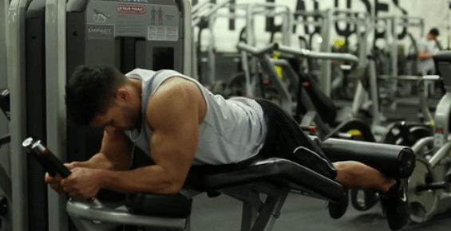
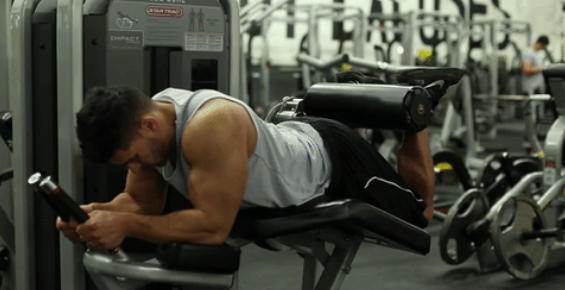

Agachamento
|  |  |
| Posição inicial do movimento. | Posição final do movimento. |
- De pé com os pés afastados à largura dos ombros. Segure a barra na parte superior das costas contraindo as omoplatas e peito levantado.
- Agachar mantendo as costas retas.
- Elevar controladamente a barra até à posição inicial.
Agachamento búlgaro
|  |  |
| Posição inicial do movimento. | Posição final do movimento. |
- De pé e de costas para um banco e coloque um dos pés no banco.
- Agachar até que a perna da frente fique paralela ao chão (joelho a 90°).
- Elevar o corpo até à extensão completa do joelho.
- No fim das N repetições, repetir o exercício para a outra perna.
Flexão porterior de coxa
|  |  |
| Posição inicial do movimento. | Posição final do movimento. |
- Deitar na máquina, colocar as pernas sob a alavanca posicionando a mesma abaixo das panturrilhas.
- Levantar lentamente a alavanca contraindo o posterior de coxa (isquiotibiais).
- Baixar lentamente a alavanca até à posição inicial.